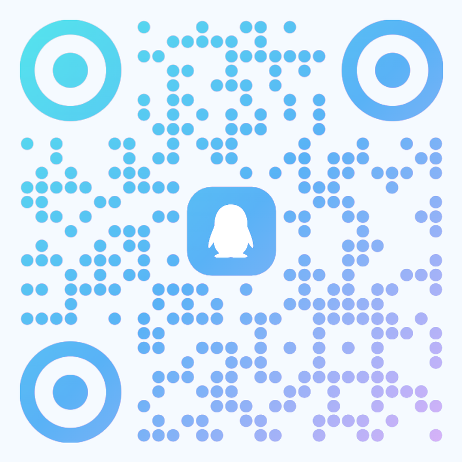

【放片前，先起个头】
各位同学，晚上好。正式开始之前，先放一条片子。这是实验室自己做的招新宣传片，十九秒，看完我们再说正事。
【播完之后，顺嘴带一句】
片子里所有的画面——终端里滚动的字符、那个沙漏、还有一闪而过的二维码——全部是用代码算出来的。没有一帧是拿剪辑软件拖进去的，配乐也不是下的，是写代码合成的。
说白了，这条片子就是我们平时干活的样子：能用代码解决的问题，就不手动做。你待会儿看到的这个演示文稿也是同一路数。
那我们开始。
whoami
> 信息工程学院 · SLsec 网络安全实验室 > 安全研究 / 漏洞挖掘 / 竞赛出征
台下的各位同学，晚上好。这里是 SLsec 实验室。可能有的同学之前在群里或者宣传海报上见过这个代号。说白了，我们就是信息工程学院旗下主打 CTF 夺旗赛、专注于网络安全实战攻防的学生技术团队。今天不讲空洞的套话，也不端架子，就花十分钟把这个团队到底干什么、能给你什么、以及怎么上车彻底说透。如果你对代码攻防、系统底层或者漏洞挖掘哪怕有一点点好奇，听完今天这几页，你就能找到明确的方向。
cat rules.md
// 运行前检查 - 拒绝兴趣小组，面向竞赛与实战 - 没有老师念课件，不搞填鸭式教学 - 唯一规矩：直接上手，碰壁，修正
先泼一盆冷水，把预期对齐。这个事儿很多刚进校的新生容易误解。首先，我们不是混学分的兴趣小组，平时要刷赛题、打线上对抗，技术强度摆在这里。其次，更别指望有人手把手当保姆。大学里最浪费时间的，就是台上念课件、台下昏昏欲睡。在 SLsec，没有人给你喂饭。说白了，学安全唯一的路径就是自己搭靶场、自己去碰壁、看报错、查源码。我们聚在一个实验室，是为了在卡壳时互相拍砖，不是坐在这等别人填鸭。想学真家伙，就得拿出直接上手的狠劲。
ls --what-you-get
[OK] 技术交流：从内核 Pwn 到密码学 [OK] 实战机会：组队出征，学校报销差旅 [OK] 团队知识库：历代踩坑笔记与题解
既然门槛不低，你凭什么来？实验室能给你什么？你看，核心就三张底牌。第一是纯粹的技术氛围。在普通寝室你聊栈溢出、聊 RCE，室友可能觉得你在念咒，但在实验室，从底层内核到密码学推导，随时有人能接住你的话题。第二是充足的实战机会。强网杯、国赛 CISCN，只要你打进线下决赛，往返路费和酒店住宿学校全额报销，只管放手去打。第三是代代传承的知识库。历届师傅踩坑积累的 Writeup 和出题笔记全部保留在内网和他们的博客上。你不需要在大海里捞针，踩在前人的肩膀上，能少走大半年弯路。
crontab -l
- Tech-Share：内部技术分享，复现 0day - 以赛代练：周末组队打 CTF，赛后复盘 - 完全开源：靶场平台与自研赛题源码公开
平时实验室的日常到底是什么样？说白了就三件事。第一项是技术分享，不搞形式主义，哪个师傅刚啃下一道神仙题，或者互联网上新爆出了某个框架的 0day 漏洞，大家就会拉出白板，就近找个周末复现。第二项是以赛代练。有时周末线上比赛一开，大家聚在一起开几罐可乐，分工切题，通宵抓 flag，赛后复盘总结。第三项是开源精神。我们自己写的安全工具、搭建的靶场平台以及出过的赛题源码，全部公开。你从这里汲取养分，未来羽翼丰满，也一样能开源反哺给后来的学弟学妹。
tree tracks/ | head -6
- Web 漏洞利用，反馈直接 - Pwn 二进制与内核利用 - Reverse 逆向扒核心算法 - Crypto 密码学稳定拿分 - Misc 取证分析，脑洞无界
打 CTF 从来不是单打独斗，而是小队协同作战。安全领域非常广，没人能全盘通吃，所以战队划分为五个核心赛道。你看，这五个方向没有高低优劣，但对胃口的要求完全不同。有人喜欢在网页逻辑和网络协议里找破绽，选 Web；有人喜欢跟汇编、内存指针硬碰硬，选 Pwn；有人沉迷拆解黑盒程序，选 Reverse；数学直觉敏锐的同学，在 Crypto 简直如鱼得水；涉猎极广、脑洞很大的，Misc 就是最佳主场。接下来五页，大家逐一对号入座。
cat tracks/web/README
// 攻击面：SQL注入、上传、RCE、反序列化 - 适合谁：入门首选，反馈直接，看得见效果
首先讲 Web 安全。对于很多零基础的新生，通常建议先从这里摸索。为什么？因为反馈极其直接。你用代理工具抓个包，改改参数，一个 SQL 注入瞬间拖出后台数据，或者上传脚本直接拿到服务器控制权限，你能立刻在浏览器里亲眼看到攻击结果。这个方向对准的是 HTTP 协议缺陷、各种 Web 框架漏洞以及经典的反序列化攻击。只要你写过简单的网页代码，明白前后端是怎么通信的，顺着这条线摸下去，很快就能体会到破解防线的乐趣。
cat tracks/pwn/README
// 攻击面：栈溢出、堆利用、格式化字符串 - 适合谁：喜欢底层，C 语言功底扎实
第二个方向是 Pwn，也就是二进制漏洞利用。这是攻防里极硬核的一块。你看，Web 攻防大多在应用层和业务逻辑里找漏洞，而 Pwn 则是把刀刃直接刺向操作系统的内存底层。比如一段 C 代码少做了一道边界检查，我们就能通过栈溢出覆盖函数返回地址，强行劫持 CPU 的指令指针；或者利用精妙的堆内存利用，甚至打入内核拿到 Root 权限。这个方向需要啃透 x86 汇编、虚拟内存机制与系统调用。如果你骨子里就喜欢底层架构，Pwn 能让你见识到代码在内存里最真实的运行形态。
cat tracks/reverse/README
// 核心：逆向工程，扒出程序核心算法 - 适合谁：热爱解谜，享受一层层剥开逻辑
第三个赛道是 Reverse，软件逆向工程。写程序是把设计图纸砌成大厦，逆向则是把编译好的软件直接拆回图纸。赛题扔过来的往往就一个编译好的二进制文件，没有任何源码。你要把文件拖进 IDA Pro 这类反编译工具里，在密密麻麻的反汇编代码中理顺执行逻辑，过掉反调试机制，扒出隐藏的核心加密算法。说白了，这就是一场高智商侦探游戏。不需要话多，只要你能静得下心，一层层抽丝剥茧剥离混淆，最后的密钥就是对你长时间推导最好的回馈。
cat tracks/crypto/README
// 攻击面：RSA、AES、椭圆曲线、格 - 适合谁：对数学敏感，团队里最稳的得分点
第四个赛道是 Crypto 密码学。在许多大型赛事里，决定队伍排名的关键往往就是密码学师傅。这个赛道不要求写上千行的工程业务，但极度看重你的数学敏感度。题目全部围绕现代加密算法展开，比如 RSA 参数缺陷、AES 密文模式利用、椭圆曲线离散对数，甚至是格密码理论。出题人给你密文和加密逻辑，暗中藏了一个数学构造陷阱。你看，如果你在数论、代数上有直觉，写几行 Python 脚本推导出私钥，你就是队伍里最稳、最可靠的得分重器。
cat tracks/misc/README
// 核心：隐写术、流量分析、日志取证、情报 - 适合谁：脑洞大、知识面杂、入门门槛最低
第五个方向，Misc 杂项与 OSINT 开源网络情报。这是门槛最平缓、玩法最多样的领域。它涵盖的面极杂：从一张图片的文件尾里提取隐写文件，从几百兆的流量包里溯源黑客攻击链，从系统内存镜像里提取密码，或者通过一张街景照片里的阴影角度与建筑轮廓定位出地理坐标。这个事儿特别考验信息检索能力和脑洞。只要你平时喜欢折腾奇奇怪怪的工具、对未知线索充满好奇心，Misc 就是你最快能斩获分数的地方。
attach --pid $(pgrep goose)
[1] CE 附加到游戏进程 [2] 扫描当前的数量值 [3] 让数量变化 → 再扫一次 → 地址收敛到几个 [4] 改掉它
assets/video/demo-backup-full.mp4。
接下来这一段不讲 PPT，直接动手。你看，我打开一个很普通的小游戏，就是大家都玩过的那种。它把「我现在有多少只」这个数字，老老实实存在本机内存里。
我先用 CE 附加到这个进程，按当前的数量扫一遍——第一次会扫出成千上万个地址。然后我让游戏里的数量变化一下，再扫一遍，候选地址就掉到几十个；再变一次，基本就剩两三个了。这个收敛过程就是内存扫描的全部原理，没有任何魔法。
改掉它。注意，这里没有用任何漏洞——没有溢出、没有越权，只是这个程序把关键数据放在了本地内存，而本地内存是你能直接改的。所以所有把校验放在本地的程序，都挡不住这一下。这也是我们做 Pwn 的起点：先理解数据在内存里长什么样，才谈得上操纵它。
cat 新生赛.md
- 10月11日 10:00 开赛，赛期 7 天，题目一次性全放 - 26 级新生 · 个人赛 · 全程线上 - 八个分区，零基础友好（含一道实体硬件题） - 不限工具、不禁 AI、不搞线下搜身 - 成绩作为 26 级招新参考的一部分（占 70%）
刚才那段演示你们大概看出来了 —— 这东西上手不难，难的是不知道从哪开始。所以我们直接给你一个起点：10 月 11 号，就在这两三天，一场新生入门赛。赛期 7 天，线上个人赛，题目一次性全放。
规矩三条。第一，不限工具，明确鼓励用 AI，不搞线下搜身。第二，八个分区，零基础友好，里面有个「计算机基础操作」，从解压装虚拟机开始，每步一个 flag —— 其中 SP 组有一道实体硬件题，用的是实验室设备，规则里写了：别带走、别拆、别刷机。
第三，这条最重要：开赛第一件事，先签到，再按引导把环境配好。这两步不只是加分 —— 它们卡着题目能不能打开：不签到后面题点不开，不配好环境靶机题也打不开。各 +100，直接算进排名。别一上来就冲题。
报名今天就开了，屏幕上是平台地址。注意只能连校园网访问 —— 手机流量进不去，不是慢，是根本不通，因为平台架在学校内网里，从外面敲不进来。连上校园 WiFi，现在就掏出手机注册。招新还看一个开放式探索项目，占 30%，已发在新生群公告里。赛后 48 小时内，把每道题的思路整理成 PDF 发到指定邮箱，逾期不候。
cat roadmap.md
01 夯实基础：虚拟机装 Kali，学 Linux 与 Py 02 刷题进阶：CTFHub 技能树与攻防世界 03 沉淀输出：每题写 Writeup，讲透才算懂
我知道现在有人在算一笔账：两三天后就比赛了，我现在学，肯定来不及了吧？
来得及。因为我们信的是以赛代练、以赛代学 —— 不是学会了才上场，是上了场才学会。这场比赛不是考试，它本身就是学习。题目一次性全放，7 天里你想什么时候打就什么时候打，今天不会的明天再试。而且新生赛里专门设了一个「计算机基础操作」分区：从解压文件、装 VMware、导入虚拟机开始，一步一步带着走，每走完一步就给你一个 flag。从完全不会到拿到第一个 flag，中间不需要任何前置知识。
所以别想着「等我学会再来」—— 等你学会，比赛都结束了。先进去，边打边学，这是最快的路。真正的路线是打完才开始的：夯实基础装好 Kali 练熟 Python，刷题进阶去 CTFHub 和攻防世界，还有一条硬规矩 —— 每题都要写 Writeup，能讲清楚才算真懂。
cat ctfs.txt
- 内部选拔：长期观察，看持续的解题记录 - 组队出征：征战 CISCN、强网杯 主流赛事 - 公费报销：打进线下决赛，路费住宿全包
基础打牢之后，就该去真正的赛场亮剑了。说白了，实验室选主力没有花架子，也不看一次两次的发挥——是长期观察出来的。你平时在内部训练赛里解了多少题、卡住的时候是怎么啃下来的、跟队友配合得怎么样，大家都看在眼里。攒够了这份记录，就跟着学长学姐组队出征 CISCN 全国大学生信息安全竞赛、强网杯等国内标杆赛事。只要打进线下决赛，往返路费和酒店住宿全部由学校报销。你不需要为差旅掏一分钱，唯一的任务就是坐在决赛赛场里，把对手靶机上的 flag 一个一个拿下来。
sudo join --team SLsec
- 招新对象：大一、大二在读学生 - 基地直达：科技楼 S605B - 进群验证：院系 - 专业 - 学号 - 到访之前：群里 @管理员 问一声

最后来看怎么加入。本次招新限定在大一和大二在读学生。上车有两种方式。第一种，扫码加入招新 QQ 群，先在群里建立联系。注意验证信息格式：必须备注'院系 - 专业 - 学号'——这一步是为了挡机器人，不是挡你。
第二种，直接来线下面基，我们的物理实验室在科技楼 S605B。不过过来之前，先在群里 @ 一下管理员或者群主，确认门开没开、有没有人在，免得白跑一趟。
群里随时都有人，问技术问题也行，问路也行。你甚至可以现在就掏手机扫一下，进群打个招呼——顺便看看这个群平时到底在聊什么。
cat /flag
- 藏法很朴素，不用任何黑客工具 - 浏览器里翻一翻、看看源码，多半就找到了
最后不放什么总结陈词了，留个小东西给有兴趣的人。刚才开场片里那台机器 `cat /flag` 吐出来一行 flag —— 那不是特效，我们真的在博客里埋了一个，就在屏幕上这个地址的那篇文章里。
藏法很朴素，不需要什么黑客工具：浏览器打开翻一翻，多半就撞见了。想试就拍一下这页，不感兴趣跳过也完全没关系 —— 这不是作业，没人检查你。但如果你真把它挖出来了，那就算你在 SLsec 迈出的第一步。
git remote -v
前面讲了那么多实验室怎么开源，这一页不是再说一遍，是给凭证。屏幕上这两个地址，现在就可以打开。
上面那个是你现在看的这份演示文稿——字体、版式、连生成那两个二维码的脚本都在里面。下面那个是刚才开场那条片子，从画面到配乐全是代码，一帧都没有用剪辑软件拖过。除了配乐我们后续进行了些许修改。
两个都是 AGPL 协议。这意味着你可以随便拿去用、拿去改，但改完也得开源，不能拿去做成闭源的东西卖钱。
我们选 AGPL 而不是更宽松的 MIT，是刻意的：实验室一直讲「反哺社区」，那就得保证从这儿拿走的东西继续流下去。不然开源就只是一句好听的话。
有兴趣的直接去翻，代码写得怎么样你们自己评判。
exit 0
> 科技楼 S605B > 招新群 1093791593 > 终端已就绪，等你来
最后把实验室一直恪守的信条送给大家：拒绝填鸭，只敬真知。网络安全从来不是靠背概念背出来的，更不是在课堂里划重点划出来的。真正的技术，是终端里跳出的成百上千行报错、是反汇编窗口里枯燥的单步调试、以及拿到 Shell 瞬间的心跳加速堆出来的。在大学里，你可以按部就班混过四年，也可以选择跟我们聚在一起，在黑底绿字的终端里找到能钻研下去的热爱。我们不问你现在的起点，只看你愿不愿意亲自动手。SLsec 的终端已经就绪，科技楼 S605B 等你来。
收尾可以把群号再念一遍，让大家有个明确的下一步动作 —— 想来的先扫码进群，其它的事群里说。
最后那行开源声明别一念而过。我们一直讲「反哺社区」，那连自己的招新材料都得开源，不然就只是口号。这份演示文稿、刚才那条片子，还有片子的全部生成源码，都在 GitHub 上，AGPL 协议——谁都能拿去用、拿去改，而且改完也得开源。有兴趣的直接去翻源码，里面连配乐都是代码合成的。